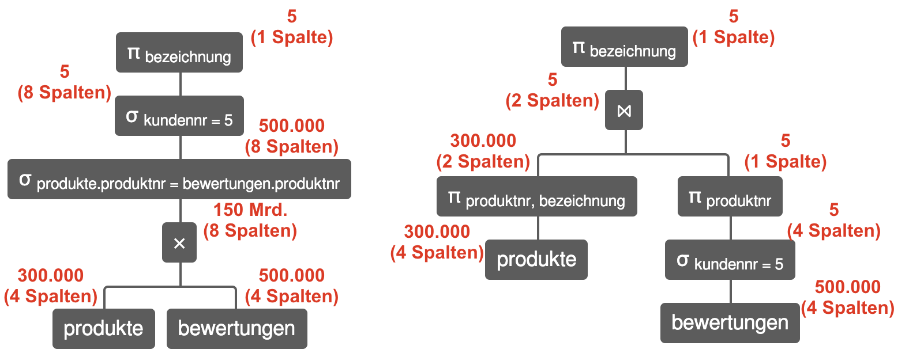

Prof. Dr.-Ing. Johannes Schildgen
johannes.schildgen@oth-regensburg.de
Datenbanken
Kapitel 3b: Anfrageoptimierung
2020-04-XX


Anfrageoptimierung
"Wie heißen die Produkte, die Kunde Nr. 5 bewertet hat?"
Äquivalente Ausdrücke:
- $\pi_{bezeichnung}\sigma_{kundennr=5}\sigma_{produkte.produktnr=bewertungen.produktnr}(produkte\times bewertungen)$
- $\pi_{bezeichnung}\sigma_{kundennr=5}(produkte\bowtie bewertungen)$
- $\pi_{bezeichnung}(produkte\bowtie \sigma_{kundennr=5}(bewertungen))$
- $\pi_{bezeichnung}(\pi_{produktnr, bezeichnung} produkte\bowtie \pi_{produktnr}\sigma_{kundennr=5}(bewertungen))$
Welcher Ausführungsplan ist besser / "billiger"?
Anfrageoptimierung
Überführung eines Ausdrucks in einen äquivalenten möglichst effizient auszuführenden Ausdruck.
Kostenbasierte Optimierer
Jeder Ausführungsplan erhält Kostenschätzung.
Der Plan mit den geringsten Kosten wird gewählt
Beispiel: Kosten = Größe der Zwischenergebnisse
Beispiel: Anfrageoptimierung
Annahme: 100.000 Kunden, 500.000 Bewertungen, 300.000 Produkte
Heuristiken
- Frühstmögliche Selektion
- Join statt Kreuzprodukt
- Frühstmögliche Projektion (ohne Duplikateliminierung)
- Join-Reihenfolge so wählen, dass Zwischenergebnisse klein sind
- Folgen von Selektionen und Projektionen zusammenfassen
- Selektionen statt Mengenoperationen
- Nichts doppelt berechnen
Heuristiken
Frühstmögliche Selektion
Vorher: $\sigma_{kundennr=5}(produkte \bowtie bewertungen)$
Nachher: $produkte \bowtie \sigma_{kundennr=5}(bewertungen)$
Join statt Kreuzprodukt
Vorher: $\sigma_{produkte.produktnr=bewertungen.produktnr}(produkte \times bewertungen)$
Nachher: $produkte \bowtie_{produkte.produktnr=bewertungen.produktnr} (bewertungen)$
Frühstmögliche Projektion (ohne Duplikateliminierung)
Vorher: $\pi_{bezeichnung}(produkte \bowtie bewertungen)$
Nachher: $\pi_{bezeichnung}(\pi_{produktnr, bezeichnung}(produkte) \bowtie bewertungen)$
Heuristiken
Join-Reihenfolge so wählen,
dass Zwischenergebnisse klein sind
Vorher: $(kunden \bowtie bewertungen) \bowtie \sigma_{hersteller='Monsterfood'}(produkte)$
Nachher: $(bewertungen \bowtie \sigma_{hersteller='Monsterfood'}(produkte)) \bowtie kunden$
Folgen von Sel. und Proj. zusammenfassen
Vorher: $\pi_{bezeichnung}\pi_{produktnr,bezeichnung}\sigma_{preis \le 5}\sigma_{hersteller='Monsterfood'}produkte$
Nachher: $\pi_{bezeichnung}\sigma_{preis \le 5 \wedge hersteller='Monsterfood'}produkte$
Selektionen statt Mengenoperationen
Vorher: $\sigma_{hersteller='Monsterfood'}(produkte) \cup \sigma_{hersteller='Calgonte'}(produkte)$
Nachher: $\sigma_{hersteller='Monsterfood' \vee hersteller='Calgonte'}(produkte)$
Kardinalitätsschätzung
Wie viele Tupel sind im Ergebnis einer Operation zu erwarten?
Hilfreiche Statistiken:
- Kardinalitäten der Tabellen (Anzahl Zeilen)
- Kardinalitäten der Spalten (Anzahl distinkter Werte)
- Kleinster, größter Wert je Spalte, Median, ...
- Werte-Histogramme (Häufigkeitsverteilung)
- Erfahrungen über Verschätzungen in der Vergangenheit (→ lernende Optimierer)
- ...
Kardinalitätsschätzung: Selektion
Annahme: Gleichverteilung
|R| (Anzahl Zeilen in R)
|R.a| (Anzahl distinkter Werte in Spalte R.a)
$|\sigma_{R.a = x}(R)| = \frac{|R|}{|R.a|}$
Beispiel:
$|\sigma_{geschlecht='weiblich'}(Personen)| = \frac{1}{3} |Personen|$
Kardinalitätsschätzung: Selektion
Selektivitätsfaktor $sf_P$: $|\sigma_P R|=sf_P \cdot |R|$
Annahme: Werteunabhängigkeit
$sf_{P \wedge Q} = sf_P \cdot sf_Q$
Beispiel:
3 verschiedene Geschlechter, 1000 verschiedene Vornamen
$|\sigma_{geschlecht='weiblich' \wedge vorname='Peter'}(Personen)| = \frac{1}{3} \cdot \frac{1}{1000} |Personen|$
$|\sigma_{geschlecht='männlich' \wedge vorname='Peter'}(Personen)| = \frac{1}{3} \cdot \frac{1}{1000} |Personen|$
Kardinalitätsschätzung: ⨯
$|R \times S| = |R| \cdot |S|$
Beispiel: $|kunden \times kunden| = |kunden|^2$
Kardinalitätsschätzung: ⋈
$|R \bowtie_{R.a=S.a} S|$
Im Allgemeinen:
$0 \le |R \bowtie_{R.a=S.a} S| \le |R| \cdot |S|$
Wenn R.a Fremdschlüssel auf S.a ist:
$|R \bowtie_{R.a=S.a} S = |R|$
Beispiel: |$produkte \bowtie bewertungen| = |bewertungen|$